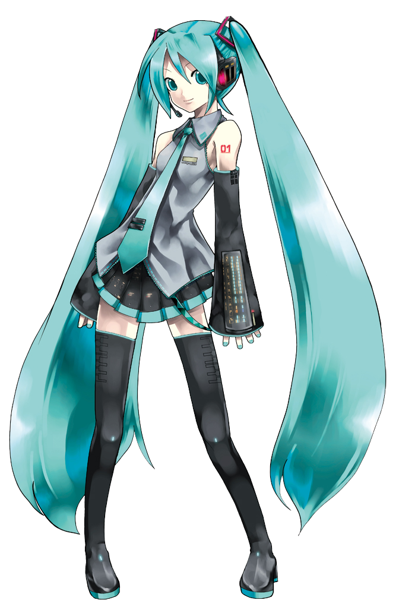

WHO IS?
HATSUNE MIKU
Hatsune Miku is music software developed by Crypton Future Media, INC., and it enables anyone to make the computer sing by entering lyrics and melodies. As a massive number of users created music using the software and posted their works on the Internet, Hatsune Miku quickly evolved into a cultural phenomenon. Moreover, Hatsune Miku has gained much attention as a character, involved in many fields such as merchandising and live performance as a virtual singer. Now her popularity has spread across the globe.